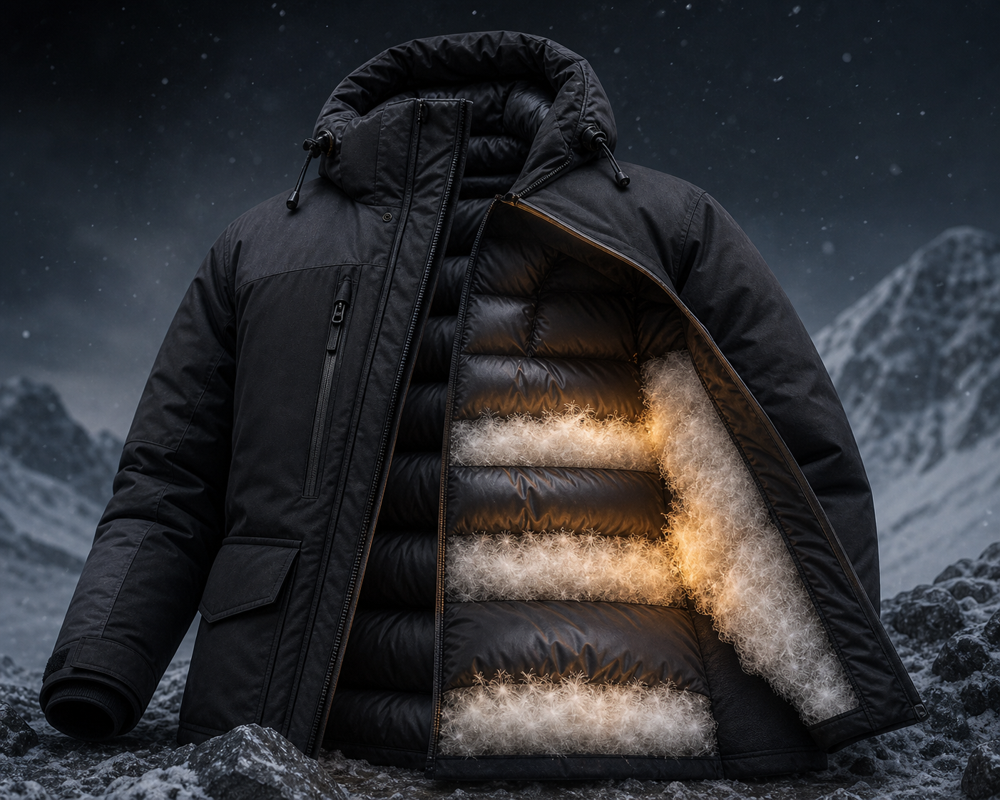

TECH 01
INSULATION · 보온
THERMA-CORE™
900 필파워 구스다운 보온 시스템
몸통 중심부의 열 손실이 큰 구간에 다운 충전량을 집중 배치했습니다.
가볍지만 강력한 900 필파워 구스다운이 체온을 오래 붙잡아
장시간 활동에도 온기를 유지합니다.
- 900 필파워 유럽산 구스다운 · 우수한 보온 대비 경량성
- 부위별 충전량 매핑으로 열 손실 최소화
- 다운 이동을 막는 박스 배플 구조